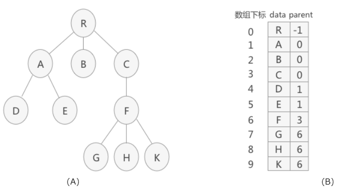
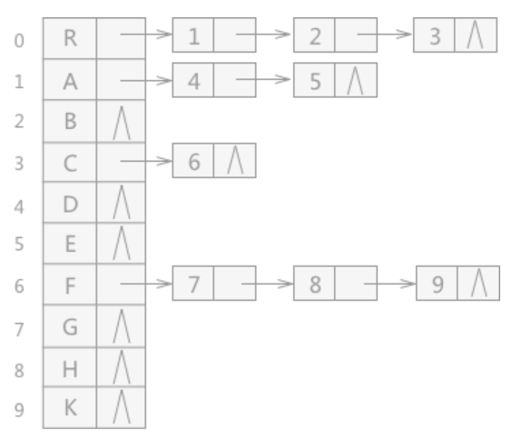
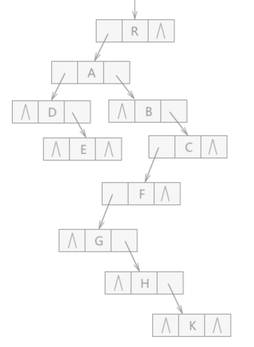

树的表示法
在使用树结构描述实际问题时，大多数不是二叉树，更多的是普通的树结构，
在存储之间具有普通树结构的数据时，经常使用的方法有3种：
双亲表示法
孩子表示法
孩子兄弟表示法
双亲表示法
取一块连续的内存空间，在存储每个结点的同时，各自都附加一个记录其父结点
位置的变量。在树结构中，除了树根外，每个结点都只有一个父结点（又叫“双
亲结点”）。
代码表示：
#define tree_size 100 //宏定义树中结点的最大数量
#define TElemType int //宏定义树结构中数据类型
typedef struct PTNode
{
TElemType data; //树中结点的数据类型
int parent; //结点的父结点在数组中的位置下标
}PTNode;
typedef struct
{
PTNode nodes[tree_size]; //存放树中所有结点
int r, n; //根的位置下标和结点数
}PTree;
例如，使用双亲表示法存储图 1（A）中的树结构时，数组存储结果为（B）：

孩子表示法
将树中的每个结点的孩子结点排列成一个线性表，用链表存储起来。对于含有
n 个结点的树来说，就会有 n 个单链表，将 n 个单链表的头指针存储在一
个线性表中，这样的表示方法就是孩子表示法。
如果结点没有孩子（例如叶子结点），那么它的单链表为空表。
代码表示：
#define TElemType int
#define Tree_Size 100
//孩子表示法
typedef struct CTNode
{
int child; //链表中每个结点存储的不是数据本身，而是数据在数组
//中存储的位置下标
struct CTNode *next;
}*ChildPtr;
typedef struct
{
TElemType data; //结点的数据类型
ChildPtr firstchild; //孩子链表的头指针
}CTBox;
typedef struct
{
CTBox nodes[Tree_Size]; //存储结点的数组
int n, r; //结点数量和树根的位置
}CTree;
例如，使用孩子表示法存储图 1 （A），存储效果如图 2：

孩子兄弟表示法
使用链式存储结构存储普通树。链表中每个结点由 3 部分组成：

代码表示：
#define ElemType int
typedef struct CSNode
{
ElemType data;
struct CSNode *firstchild, *nextsibling;
}CSNode, *CSTree;
通过孩子兄弟表示法，普通树转化为了二叉树，所以孩子兄弟表示法又被称为
“二叉树表示法”或者“二叉链表表示法”。
例如，用孩子兄弟表示法表示图 1 （A）的普通树，存储结果为：
